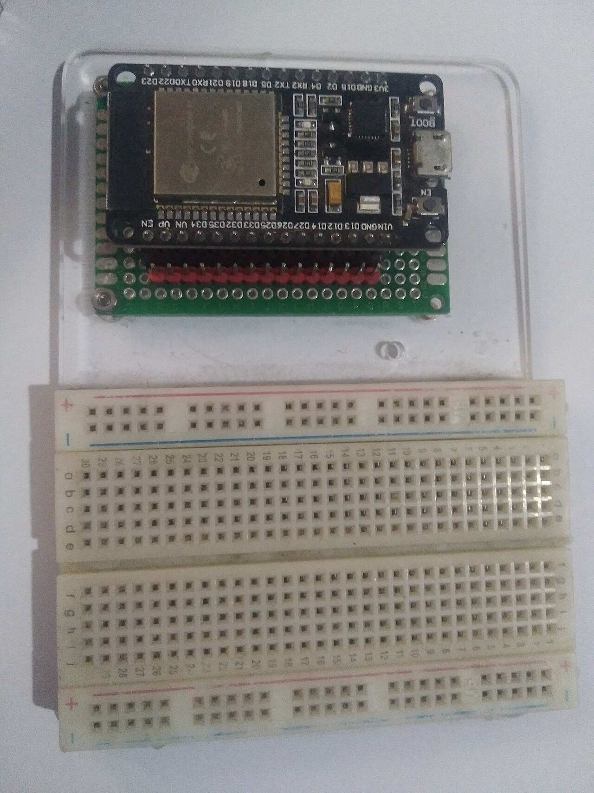
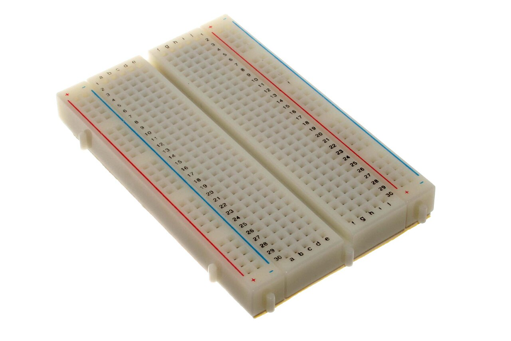
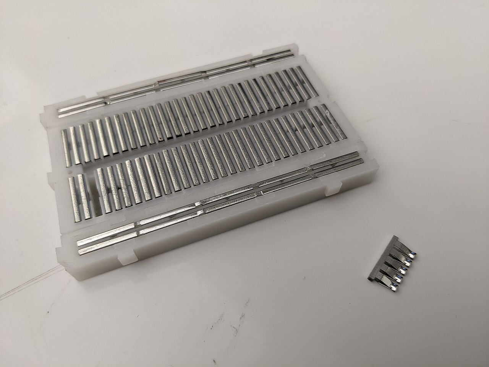
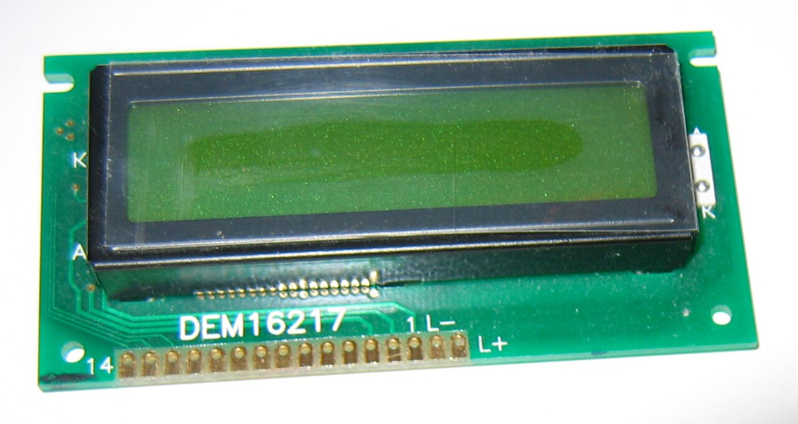
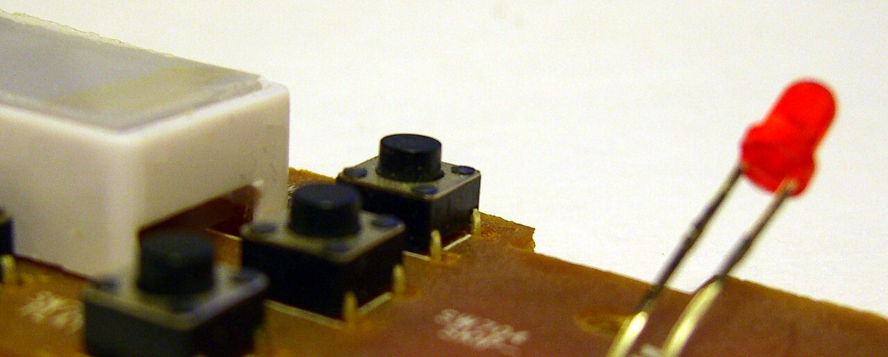

ESP32．Getting Into IoT: From One Board to Your First Module
The first hurdle in IoT isn't code — it's the board and the pile of wires. Following the order "know the parts → circuit basics → buses", this covers every part of an ESP32 DevKit, how a breadboard connects, why you can't pick pins at random, and the four ways any module talks to an ESP32. No code anywhere.
Type: beginner guide / hardwareScope: stages 1–3 of fiveCompiled: 2026-09-16
TL;DR
Before wiring any module, ask three things: what voltage, is GND shared, which bus?
An ESP32 DevKit is a USB-serial chip + the ESP32 + flash. Pins are 3.3V logic and not 5V-tolerant.
Not every pin is free: 6–11 run the flash, 34–39 are input-only, 0/2/5/12/15 are strapping pins, 1/3 are USB serial.
Breadboard: 5-hole columns connect, rails run lengthwise, the center gap splits the halves.
There are only four connection styles: GPIO (one pin per job), I2C (two wires + addresses), SPI (shared bus + chip select), UART (TX to RX). The pin names tell you which.
The second half walks through common modules, each illustrating one wiring pattern: LED, 7-segment display, 1602 LCD, 1.8" TFT, button, matrix keypad, sound module.
How this guide is laid out
The five stages build on each other: without voltage you'll wire it wrong, without buses you'll pick the wrong pins — and no amount of networking code lights an LED that isn't wired. So this guide covers the first three stages, then checks them against real modules, each one a representative of a wiring pattern.
Stage
What you need
What happens if you skip it
1 The parts
Board anatomy, pin limits, how a breadboard connects
Wires that aren't really connected, or a strapping pin that stops the board booting
2 Circuit basics
V/I/R, common ground, pull-ups, 3.3V vs 5V
Floating reads, burnt LEDs, GPIOs killed by 5V
3 Buses
Telling GPIO, I2C, SPI and UART apart, and picking pins
Library defaults don't match your wiring; blank screens, silent devices
4 Networking
WiFi, HTTP/MQTT, BLE, time sync
(not covered here; needs stages 1–3 first)
5 Real build
Sensors, power, low power, soldering and enclosures
(not covered here)
Stage 1-1: What's on an ESP32 DevKit

The real thing: the silver can is the ESP32-WROOM module, BOOT and EN sit beside the micro-USB port, and the GPIO numbers are printed along both edges. This is a 38-pin version.
The ESP32 is Espressif's microcontroller: dual-core, with 2.4 GHz WiFi and Bluetooth built in (the classic part has both Classic and BLE). A "DevKit" mounts it on a breadboard-friendly board with a USB-serial chip, a 3.3V regulator, EN/BOOT buttons and an on-board LED.
How code gets into the board
"Compiling" turns .ino into machine code on your computer, with the board uninvolved; "uploading" (flashing) writes it into the board's flash chip over USB, where it stays — unplug and replug and the same program runs. That's why compiling only needs a board selected, while uploading also needs a Port.
Common beginner situation
Why
The IDE doesn't auto-detect the board
The USB chip is a generic CH340/CP2102, so the computer only sees "a serial port". Pick ESP32 Dev Module manually.
Debug reports unable to open ftdi device
Step debugging needs a JTAG adapter such as ESP-Prog; the DevKit's USB chip only does UART. On classic ESP32, print-debugging is the norm.
Compiles fine but "no upload port provided"
Compiling needs only a board; uploading also needs a Port.
Resource busy during upload
Only one program can hold the serial port at a time; close the Serial Monitor.
Stuck at Connecting.....
The board isn't in download mode. Hold BOOT until writing starts.
Serial Monitor shows only garbage
The two baud rates don't match, or the board's crystal differs from what the core assumes (a classic case: 115200 set, 74880 actual).
Wireless
Classic ESP32: 2.4 GHz WiFi (no 5 GHz) + Classic Bluetooth + BLE
S3/C3 are BLE-only; S2 has no Bluetooth
Memory
Typically 4 MB of flash for code; only a few hundred KB of RAM
Whole web pages won't fit; small JSON does
Voltage
Chip and pins at 3.3V; USB's 5V appears on VIN
Never feed 5V into a GPIO
Stage 1-2: The pin map
Most ESP32 GPIOs can be remapped internally, which makes it look like anything goes — but a few groups have built-in limits, and hitting one means a board that won't boot or a signal you can never read. Check this table before choosing:
Group
GPIO
What to watch
Flash
6–11
Used by the on-board flash; touching them crashes the board (usually not broken out)
Boot-critical
12
If HIGH at boot, flash voltage is set to 1.8V and the board won't start
Strapping
0, 2, 5, 15
Read at boot; external circuits can break flashing or booting
UART0
1, 3
USB flashing and serial output use these; reuse causes conflicts
Input-only
34, 35, 36, 39
No output and no internal pull-up — buttons and keypad rows won't work
Hardware I2C
21 SDA, 22 SCL
The library default; wire here and there's nothing to configure
Hardware SPI (VSPI)
18 SCK, 23 MOSI, 19 MISO, 5 CS
Fastest path; other pins fall back to software SPI, slow enough to watch
ADC2
0, 2, 4, 12–15, 25–27
Can't read analog while WiFi is on; use ADC1 (32–39) for analog sensors
Stage 1-3: The breadboard


Left: the top, with the red and blue power rails. Right: opened up, the metal clips are the wires — one clip = one node; the long strips are the rails and the short ones are the 5-hole columns.
Knowing which holes are the same wire is most of it: the 5 holes a–e in a column are one node; f–j is another; the red/blue rails run the full length. Two legs in the same group are simply shorted together.
Using the rails: run 3V3 to the red + and GND to the blue −; modules then tap power nearby and share GND automatically.
Don't mix 5V and 3.3V on one rail: give 5V modules the other rail and label it, or 5V will eventually reach a GPIO.
Long boards often split their rails in the middle — common on 830-point boards; check before wiring.
DevKits are wide: they can leave just one free row on each side. Two boards side by side (or an expansion base) is the usual fix.
Stage 2: The electrical basics
Voltage V
The potential difference between two points, like water pressure. ESP32 HIGH = 3.3V, LOW = 0V.
Current I
How much actually flows, in mA. Too much current is what burns parts.
Resistance R
Limits current. V = I × R tells you which resistor to use at a given voltage.
Common ground
Every GND must be tied together, or signals have no shared reference.
Digital vs analog
Digital is HIGH/LOW; analog is a continuous voltage the ADC turns into a number (0–4095 on ESP32).
PWM
Fast switching fakes "half on": the duty ratio sets brightness or motor speed.
Pull-ups: why a floating pin is a problem
An input with nothing holding it high or low behaves like an antenna, flickering with ambient noise. A pull-up resistor holds it at 3.3V by default; pressing the button shorts it to GND. So button logic is inverted: released = HIGH, pressed = LOW. The ESP32 has built-in pull-ups, so no external resistor is needed.
This is the classic beginner trap: many modules were designed for the 5V Arduino Uno. The ESP32 outputs 3.3V and accepts 3.3V only. A module that merely listens is usually fine; one that sends signals back (an ultrasonic Echo pin, an LCD backpack's pull-ups) must be handled.
Stage 3: Only four ways to connect
Read the pin names printed on a new module and you can tell which style it uses:
Pin names look like
Style
How to wire
IN, OUT, SIG, Trig, Echo
GPIO
Any safe GPIO, one wire per signal
SDA, SCL
I2C
SDA→21, SCL→22; devices share the two wires, told apart by address
SCK/CLK, MOSI/DIN, MISO, CS, DC
SPI
SCK→18, MOSI→23, MISO→19; one CS per device
TX, RX
UART
Cross over: their TX→ESP32 RX; avoid 1/3, use 16/17
VCC, VIN, GND
Power
3.3V or 5V per the module; GND always shared
Names can lie: the common 1.8" TFT is printed SCL/SDA, which looks like I2C, but they're really SPI's SCK/MOSI. The giveaway is the CS and DC pins, which only SPI has.
Why UART needs an agreed speed
UART has just TX and RX and no clock line, so the receiver can't tell how wide a bit is — it times its own samples from the agreed baud rate. That's why the Serial Monitor has a 115200 setting: the dropdown changes the decoding tempo on the computer side only. If the two numbers differ, the same voltages decode into garbage. Tolerance is about ±2–3%.
A fixed routine for picking pins
Checking it against real modules
The pile of modules in a starter kit boils down to a few wiring patterns. Rather than memorising pinouts one by one, recognise the pattern — get that right and you can wire a different brand or model just as easily.
Module
Pattern
Concept it teaches
On-board LED
GPIO output
Drive a pin high/low; current limiting
4-digit 7-segment
Many GPIOs + scanning
Multiplexing, common cathode/anode, current limits
1602 LCD + I2C
I2C
Buses and addresses, the 5V pull-up risk
1.8" TFT
SPI
Hardware pins, chip select, command vs data
4-leg button
GPIO input
Pull-ups, bounce, internal contacts
4×3 matrix keypad
GPIO matrix
Scanning to save pins, switching pin modes
Sound module
GPIO trigger
Edge vs level triggering
Pattern ①: GPIO output — start with the on-board LED
The first sketch needs no wiring: on most DevKits GPIO 2 already drives an LED. Blink it once a second while printing over serial and you verify three things at once — upload, serial and GPIO. With those confirmed, later module problems can't be blamed on the setup.
An external LED needs its own resistor (see the "one LED loop" diagram above): a single ESP32 pin should stay under about 20 mA, and wiring an LED straight between GPIO and GND asks it to take the maximum.
Pattern ②: many GPIOs and scanning — the 4-digit 7-segment
Common parts such as the 5641AS or 3461AS have 12 pins. The key is what each kind of line does: 8 segment lines pick the shape, 4 digit lines pick which digit. Same-named segments are joined across digits, so only one digit is lit at a time and fast rotation fools the eye. This trick — multiplexing — comes back in LED matrices and keypads.
Watch out for
Detail
Pin numbering
Face-up with the dp at the bottom: bottom row 1–6 left to right, top row 12–7 left to right
Resistors
330Ω (or 470Ω) on each of the 8 segment lines; none on the digit lines
Current
With a whole digit lit, current piles into that digit pin near the GPIO limit — add transistors for continuous use
Cathode vs anode
A common-cathode digit lights when its pin goes LOW, common-anode is the opposite — check which you have
Not sure which? Ask a multimeter
Pattern ③: I2C — the 1602 LCD with a backpack

A bare 1602 module: 14 pins along the bottom edge (16-pin versions with backlight pins are common too), meaning a dozen wires. An I2C backpack solders onto the back and turns them into four.
The PCF8574 on the backpack translates I2C into the parallel signals the LCD wants, turning a dozen wires into four. That's the value of a bus: more I2C devices can hang on the same SDA/SCL, told apart by address (0x27 for PCF8574, 0x3F for PCF8574A).
Symptom
Check first
Backlight on, no text
Nine times out of ten it's contrast: turn the blue pot until characters or blocks appear
Only a row of blocks
Powered but I2C isn't talking: the address may be 0x3F, or SDA/SCL are swapped
Faint text on 3.3V
The 1602 wants 5V; move power to VIN
Text past 16 characters vanishes
Each row holds 40 characters in memory but only 16 are visible, and there's no auto-wrap
Pattern ④: SPI — the 1.8" color TFT
Screens move far more data than a text LCD, so they usually speak SPI: clock and data are shared, and each device gets its own CS line — pull a device's CS low to talk to it. Data only flows toward the screen, so MISO can be skipped.
Use the hardware pins (18/23) for SCK/MOSI: they're the library default, and other pins fall back to software SPI — slow enough to watch the screen fill line by line.
DC (sometimes printed RS or A0): tells the screen whether the bytes are commands or pixels — a line unique to SPI displays.
Offset image or red and blue swapped: these boards come in black/green/red-tab variants with different init settings — try another, it's not a wiring fault.
The BL pin: tie it to 3V3 for always-on, or drive it from a GPIO with PWM to dim or truly blank the screen.
Pattern ⑤: GPIO input — the 4-leg button

The 4-leg tactile switch found in every starter kit: a black square body with a leg at each corner. The four legs are really two pairs, and each pair is permanently connected.
A button is the simplest input, yet it brings three ideas at once: pull-ups (a defined level when released), internal contacts (only the diagonal pair is a switch) and bounce (one press chatters several times).
The classic symptom of miswiring is nothing happening at all: two legs of the same pair are just a wire. Move to the diagonal.
Chain the GND legs of several buttons and run one wire back to the ESP32's GND instead of one per button.
Short vs long press is just timing: under 30 ms is bounce, released before 3 s is a short press, and holding to 3 s counts immediately.
Pattern ⑥: a GPIO matrix — the 4×3 keypad
One pin per key runs out fast: 12 keys would need 12 pins plus GND wiring. A matrix arranges them as 4 rows × 3 columns on just 7 wires, with no GND and no resistors — at the cost of scanning in software. It trades time for pins, the same idea as multiplexing a 7-segment display.
Row lines need pull-ups, so 34–39 are out (no internal pull-up).
Float (input) the columns you aren't scanning so two keys pressed at once can't short two outputs together.
R1–R4/C1–C3 are the keypad's internal rows and columns, not necessarily the ribbon's left-to-right order. Rather than guessing, print which two GPIOs connect on a press: six keys are enough to deduce the whole mapping without rewiring.
Pattern ⑦: a GPIO trigger — the sound module
Modules like the ISD1820 store the audio in their own chip (hold REC and speak for up to ~10 s); the ESP32 only "presses play". It's the purest GPIO-output example, and it introduces a distinction that keeps coming back: edge triggering (one transition runs the whole thing) versus level triggering (it continues only while held).
Power it at 3.3V: run the module at 5V and the ESP32's 3.3V may not register as HIGH.
What it can't do: no programmed melodies (that needs a passive buzzer and tone()) and no Bluetooth audio (that needs an I2S module such as the MAX98357A, or a ready-made BT receiver). Decide first whether you want to play a recording or generate sound.
Back to the roadmap
By this point all three stages are in play: the board and its pin limits (stage 1), voltage and common ground (stage 2), and reading pin names to pick the right connection (stage 3). Only with those solid does stage 4 mean anything — data pulled over WiFi still has to land on a screen and be driven by buttons, which is exactly what this guide covered.